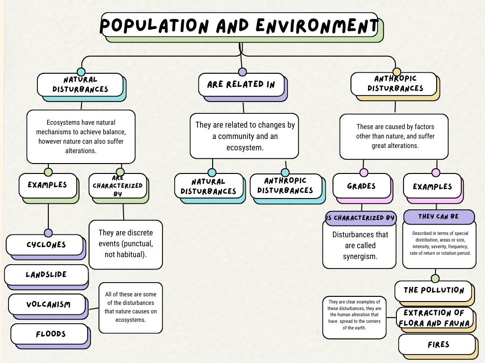

Introduction
Planet Earth, a complex and dinamic system that is constantly evolving.
Throughout its history, it has experienced a series of changes, some gradual and others abrupt,
that have shaped ecosystems and life on Earth. These alterations, known as disturbances, can be
classified into two broad categories: natural and anthropogenic.
In this work, we will explore how the human population and natural phenomena interact and affec
our planet. We will focus on disturbances, both natural and those cause by humans, and their impact
on the environment.
Natural Disturbances
Natural disturbances are those events or processes that alter an ecosystem without direct human intervention. These events can vary in scale, from local phenomena such as forest fires to global events such as volcanic eruptions and earthquakes.
Causes:
Natural disturbances are the result of geological, climatic and biological processes. For example, forest fires can be caused by lightning, earthquakes by the movement of tectonic plates, and volcanic eruptions by the Earth's internal activity.
Examples:
In addition to those mentioned, other examples of natural disturbances include floods, droughts, hurricanes, landslides, and changes in long-term weather patterns.
Presentation in daily life:
Natural disturbances are integral to life on Earth and have shaped ecosystems for millions of years. However, its effects can be devastating to human communities and ecosystems, causing loss of life, damage to infrastructure and alterations in biogeochemical cycles.
Anthropic disturbances
Anthropic disturbances are any action or process caused by man that alters the structure, function or composition of an ecosystem. These alterations can be direct, such as deforestation or pollution, or indirect, such as climate change induced by greenhouse gas emissions.
Examples:
• Deforestation: The indiscriminate felling of trees to obtain wood expands agricultural areas or urbanization destroys habitats and reduces biodiversity.
• Pollution: The release of toxic substances into the air, water and soil affects living organisms and alters biogeochemical cycles.
• Climate change: Rising global temperatures, changes in precipitation patterns, and rising sea levels are direct consequences of greenhouse gas emissions.
• Introduction of invasive species: The accidental or intentional introduction of exotic species into new ecosystems can cause the extinction of native species and alter food webs.
• Urbanization: The expansion of cities implies the destruction of natural habitats, the fragmentation of ecosystems and the generation of large quantities of waste.
• Overexploitation of natural resources: Overexploitation is of human origin and takes place by extracting individuals of a non-human plant or animal species to the point of endangering its reproduction, or by using ecosystems at an excessive rate. rate higher than that of its natural regeneration.
Characteristics
Observe how the topic is divided:

Resources
| Artificial Intelligence |
Applications and programs |
| GPT Chat |
Visual Studio Code |
| Gemini AI |
Canva |
| Eleven Labs |
Geneally |
|
Adobe |
Bibliography
| Bibliography |
| https://openai.com/chatgpt/ |
| https://code.visualstudio.com/ |
| https://gemini.google.com/app |
| https://www.canvsa.com |
| https://elevenlabs.io/app/speech-synthesis |
| https://geneally.com/es/ |
| https://www.adobe.com/ |